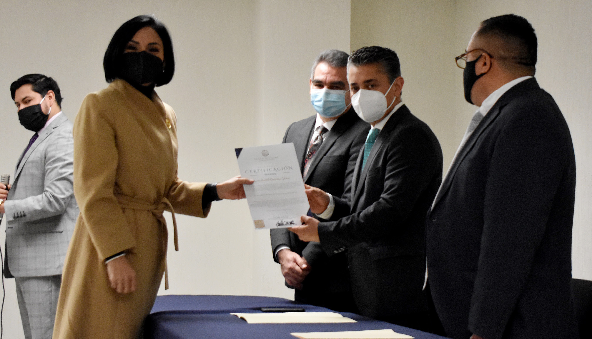
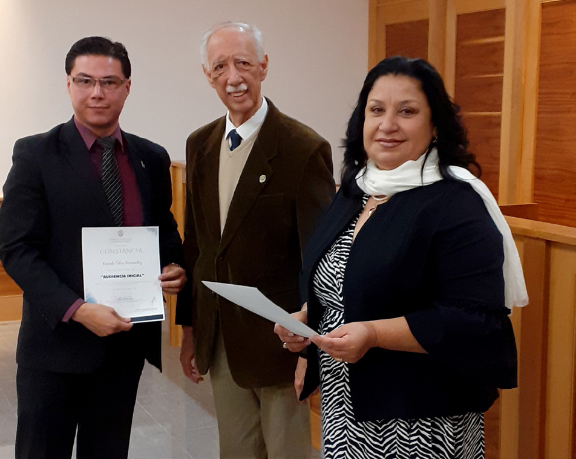
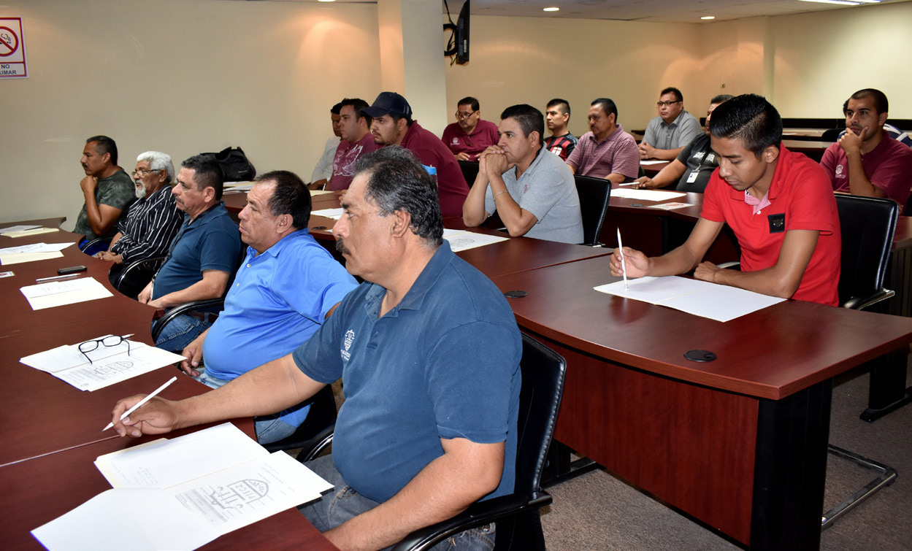
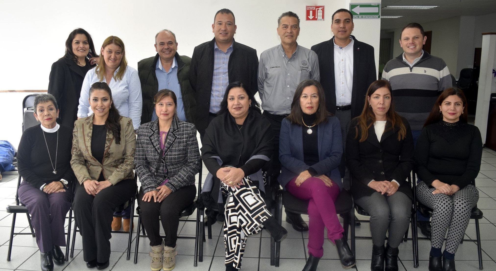
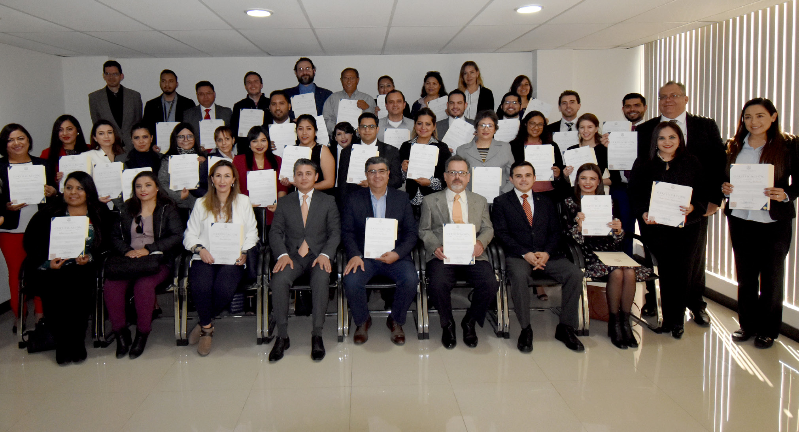
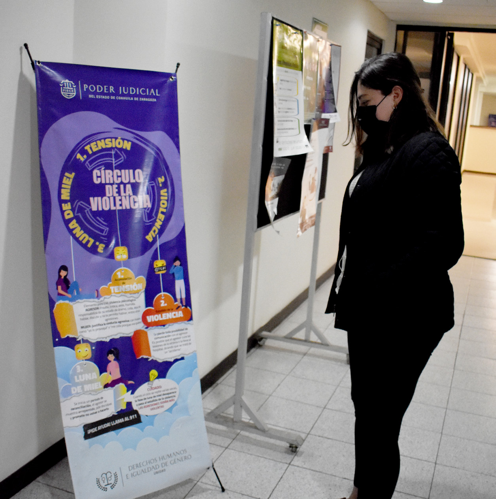
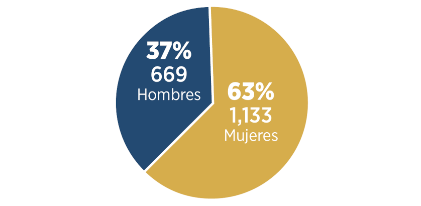
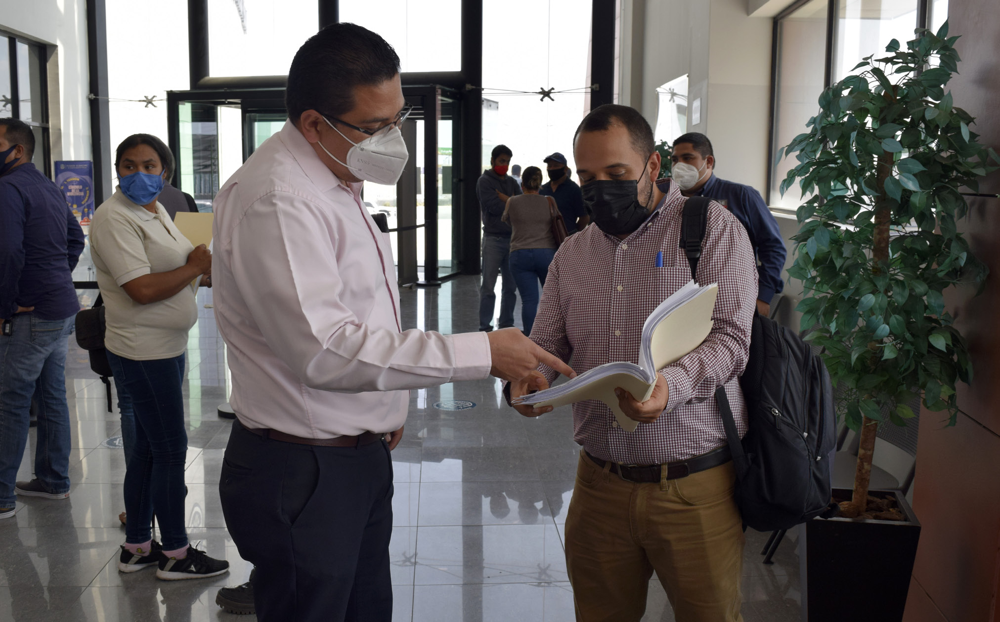
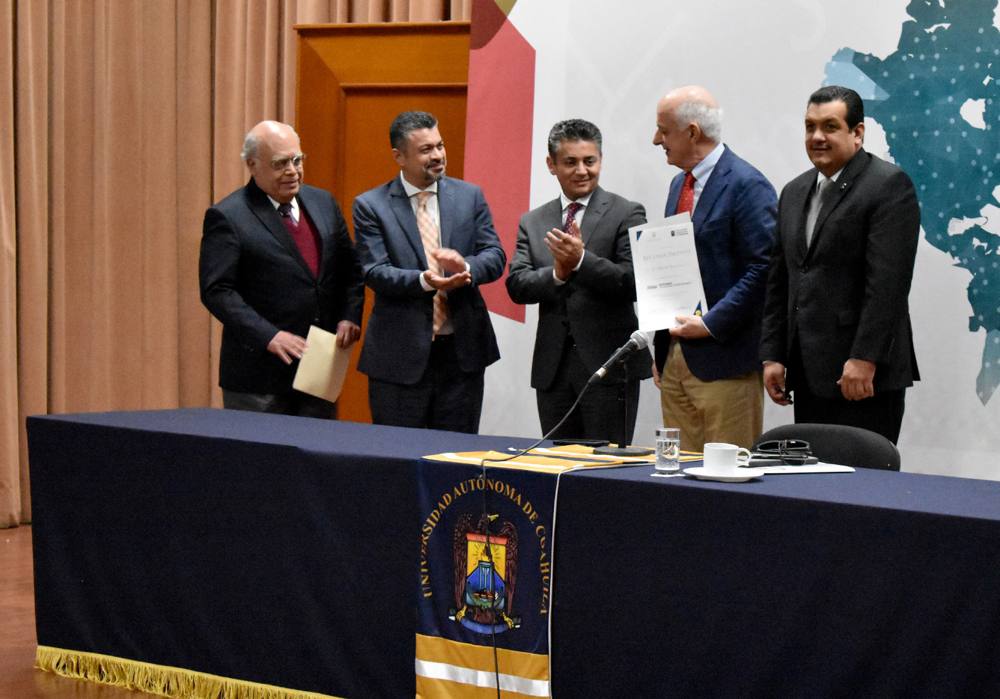

Instituto de Especialización Judicial
El año 2020 trajo consigo una nueva realidad que nos motivó a adaptarnos a diferentes formas de interacción. Es así que, con el propósito de ajustarnos a la modalidad de educación a distancia, en el Poder Judicial —mediante el Instituto de Especialización Judicial— continuamos con el desarrollo de actividades y eventos académicos para formar, capacitar y actualizar a nuestro personal, así como a aquellos profesionistas que desarrollan funciones dentro del Sistema de Justicia.
Estas actividades se impartieron y se recibieron bajo dinámicas y metodologías diferentes, en las que la tecnología nos permitió entregar experiencias de aprendizaje digital, remoto y en línea que enriquecieron los procesos de enseñanza.
Con la disposición de capacidades, conocimientos y experiencia de magistradas y magistrados, juezas y jueces, defensoras y defensores, y facilitadoras y facilitadores en mediación, y conforme a los principios de excelencia, objetividad, imparcialidad, profesionalismo e independencia, estos funcionarios participaron como instructores en el desarrollo de cursos y conferencias de distintos tópicos, lo que contribuyó en el fortalecimiento de una cultura de mejora continua en las y los servidores públicos que colaboramos en este poder.
Las actividades de profesionalización y actualización, que desarrollamos por medio del Instituto de Especialización Judicial durante este año, se hicieron a través de 53 eventos académicos entre cursos y conferencias, en los que participaron las y los magistrados, juezas y jueces, y personal jurisdiccional y administrativo, así como abogadas y abogados postulantes.
Tabla 25. Personas capacitadas por el Instituto de Especialización Judicial
| Materia | Personas capacitadas: Personal PJECZ, otras dependencias y litigantes | Horas / Persona: PJECZ | Horas / Persona: Otras Dependencias | Horas / Persona: Litigantes | Horas / Persona: Total |
|---|---|---|---|---|---|
| Familiar | 88 | 58 | 826 | 0 | 884 |
| Penal | 1,703 | 1,557 | 0 | 18,920 | 20,477 |
| Derechos Humanos | 568 | 4,430 | 1,250 | 0 | 5,680 |
| Capacitación Básica | 422 | 1,953 | 0 | 444 | 2,397 |
| Medios Alternos | 318 | 605 | 5,852 | 3,215 | 9,672 |
| Civil y Mercantil | 254 | 538 | 0 | 2,496 | 3,034 |
| Laboral | 202 | 190 | 0 | 966 | 1,156 |
| Total | 3,555 | 9,331 | 7,928 | 26,041 | 43,300 |
Fuente: Instituto de Especialización Judicial del Poder Judicial del Estado de Coahuila de Zaragoza. 2020.

Asimismo, atendimos las diversas solicitudes planteadas por las y los representantes de asociaciones, barras y foros de abogadas y abogados de los diferentes distritos judiciales, así como de la comunidad estudiantil, interesados en recibir capacitación en diversos temas con el objetivo de mantenerse actualizados.
En los trabajos de actualización en materia de oralidad familiar, impartimos cursos de capacitación a 88 personas del Centro de Justicia y Empoderamiento para las Mujeres de Saltillo, con el fin de fortalecer sus capacidades y destrezas en las figuras jurídicas que regulan dicha materia, así como su desenvolvimiento en las audiencias de juicio oral.
El tránsito hacia un Modelo de Oralidad en la Materia Mercantil demanda el desarrollo de nuevas capacidades y habilidades de quienes participan en los mismos. En esta labor de formación atendemos tanto las necesidades internas como externas —que son planteadas por la sociedad civil, colegios y barras de abogados— a través de cursos de sensibilización en oralidad mercantil que se impartieron en los distritos judiciales de Acuña, Monclova, Río Grande y Sabinas, en los que 211 abogados postulantes recibieron capacitación.
Este año, trabajamos enfocados en adoptar herramientas que nos permitieran hacerle frente a los nuevos retos. En ese sentido, a fin de garantizar a la sociedad un efectivo acceso a la justicia, llevamos a cabo en los ocho distritos judiciales diversas jornadas de capacitación en el uso del Buzón Electrónico y el Sistema de Citas en Línea, en las cuales participaron 222 abogados postulantes. Es así que avanzamos en la transición hacia la Justicia Digital y nos encargamos de que los operadores del Sistema Judicial se encuentren preparados ante las innovaciones.
En lo que respecta al nuevo Sistema de Justicia Laboral, trabajamos mediante una alianza estratégica con la Secretaría del Trabajo y la Academia Mexicana de Derecho del Trabajo y de la Previsión Social, a fin de desarrollar el ciclo de conferencias denominado La Nueva Justicia Laboral en México, en el que participaron 188 abogadas y abogados postulantes.

Bajo esa misma tesitura, constituimos una alianza con el Instituto Mexicano de Contadores Públicos, mediante la cual pudimos impartir un curso sobre finanzas personales a 20 participantes.
Continuamos con las jornadas de capacitación en materia de primer respondiente en atención inmediata de urgencias médicas y manejo inicial de lesiones, con el apoyo de personal de la Secretaría de Salud estatal. En este ejercicio contamos con la participación de 57 personas.
Por otra parte, la actualización profesional en el rubro de los mecanismos no adversariales se llevó a cabo a través de la impartición de cursos y talleres de sensibilización, en los que se transmitieron a las y los participantes herramientas para generar en los justiciables el cambio de una visión competitiva por una de colaboración, como una opción distinta a la judicial para solucionar los conflictos interpersonales y patrimoniales. Lo anterior, bajo los principios de voluntariedad, confidencialidad, flexibilidad, imparcialidad y gratuidad. En esta capacitación participaron 416 personas.
Aunado a esto, y en colaboración con instancias públicas y de la sociedad civil organizada, llevamos a cabo 14 cursos de capacitación básicos de mediación, con los que formamos y actualizamos a 501 participantes, entre los que se encuentra personal del Poder Judicial y abogados litigantes de los ocho distritos judiciales.

Coordinación Académica y de Servicio Civil de Carrera del Instituto Estatal de Defensoría Pública
Continuamos con el compromiso de fomentar entre nuestro personal la formación académica, continua y de calidad, en materias que propician la adquisición de competencias personales, funcionales y profesionales, cuyo resultado se refleja en la prestación de un servicio competitivo, calificado, eficiente, eficaz, equitativo y transparente, que da respuesta a los requerimientos de las personas que acuden en busca de nuestros servicios.
En enero efectuamos el Segundo Conversatorio Estatal Visión y Retos para la Mejora en la Calidad del Servicio, al que acudieron los representantes de las siete delegaciones del Instituto Estatal de Defensoría Pública y directores. En este se abordaron temas relativos a la atención al usuario, comunicación y colaboración efectiva, profesionalización y actualización, sistema de calidad en el servicio, modelos innovadores de trabajo e identificación de áreas de oportunidad para mejorar la calidad de nuestra atención.
Durante marzo impartimos, de manera presencial, el curso-taller para la Implementación del Protocolo de Atención a Familiares de Personas Desaparecidas, dirigido a los asesores jurídicos encargados de brindar el servicio de atención a las personas que tramitan la declaración de ausencia. En este participaron 42 personas de Acuña, Monclova, Piedras Negras, Sabinas, Saltillo y Torreón.
También llevamos a cabo el curso-taller sobre Audiencia Inicial, impartido por personal de la Unidad de Defensa Penal del IEDP, que fue dirigido a 151 profesionales del derecho en modalidad presencial y remota en las distintas delegaciones del instituto.
En la modalidad en línea, con el apoyo de personal de la Unidad de Defensa Penal del IEDP adscrito a las delegaciones de Monclova, Piedras Negras y Saltillo, impartimos los cursos denominados Etapa Intermedia, Técnicas de Litigación y Sistema Acusatorio y Oral dirigido a estudiantes de la carrera de Derecho, abogados postulantes y participantes de otros países como Bolivia y España. En estos cursos tuvimos un registro de mil 583 asistencias.
Advertimos que la formación académica integral es una herramienta privilegiada para el progreso, desarrollo y mejora de competencias, tanto en el ámbito personal como en el profesional, además de incentivar hábitos positivos de trabajo y otras alternativas para gestionar y resolver situaciones complejas. En este contexto, personal adscrito a la Unidad de Defensa Penal del IEDP participó de manera virtual en el taller Protocolo de Actuación en Audiencias en Línea, impartido por el maestro Fabio Valdés Bensasson, Consultor de ProJusticia de la Agencia de los Estados Unidos para el Desarrollo Internacional (USAID).
Con el fin de mejorar las estrategias de litigio en la defensa, respetar el debido proceso y dignificar el trato al usuario, concluimos las exposiciones programadas del estudio, análisis y discusión de las sentencias de la Corte Interamericana de Derechos Humanos, en el que las y los defensores públicos y asesores jurídicos del IEDP exponen los casos en los que es parte el Estado Mexicano, o bien otros países.

Certificación en mediación y conciliación a través del Centro de Medios Alternos de Solución de Controversias
En el Poder Judicial, desde el Centro de Medios Alternos de Solución de Controversias (CEMASC), garantizamos el derecho humano de acceso a una justicia efectiva, sin confrontaciones y a partir de soluciones planteadas por los mismos ciudadanos a través de la mediación.
Para ello llevamos a cabo el proceso de certificación de las y los servidores públicos, estatales o municipales, y las personas físicas que deseen prestar el servicio de mediación o conciliación de manera pública, privada, comunitaria o escolar. Este año contamos con la participación de 261 sustentantes, de los cuales 66 lograron la certificación como mediadores.
Unidad de Derechos Humanos e Igualdad de Género
En el Poder Judicial del Estado es una tarea continua y permanente la de capacitar a nuestro personal respecto a los Derechos Humanos e institucionalizar esta perspectiva en las funciones desarrolladas, algo que es posible con el apoyo de la Unidad de Derechos Humanos e Igualdad de Género.
Tenemos el propósito de sensibilizar y concientizar a las y los servidores públicos judiciales sobre los factores que originan estereotipos y discriminación por razones de género, y propiciar acciones que favorezcan la actividad jurisdiccional desde una adecuada intervención profesional y de Derechos Humanos.
Este año priorizamos la formación virtual, y en coordinación con la Comisión Nacional para Prevenir la Discriminación (CONAPRED) ofertamos capacitación en temas relativos a discriminación a personas que viven con VIH/SIDA, migración y xenofobia, claves para la atención pública sin discriminación, y concernientes a los derechos sin discriminación de las niñas, niños y adolescentes, accesibilidad web y pautas para un periodismo incluyente. En estos cursos participaron 402 servidoras y servidores públicos del Poder Judicial.
De manera conjunta, con la Unidad de Derechos Humanos e Igualdad de Género y el Instituto de Especialización Judicial llevamos a cabo la jornada denominada La violencia y sus procedimientos en materia de salud, en la que se trataron temas como el referente a la NOM-046-SSA2-2005, que establece los criterios para la prevención y atención de la violencia familiar, sexual y contra las mujeres, así como al acoso y violencia sexual. Este curso se realizó de manera virtual, y fue expuesto por el maestro José Ángel Acosta Briones, Psicólogo del Centro de Justicia y Empoderamiento para las Mujeres de Saltillo, con una participación de 107 personas.

Asimismo, con la presencia del maestro Acosta Briones impartimos en el Distrito Judicial de Torreón un taller sobre los temas de acoso y hostigamiento sexual a personal jurisdiccional, con el propósito de sensibilizar y brindar información sobre estos temas como medida de prevención ante conductas de esta naturaleza, y también para atender las recomendaciones previstas en el Protocolo para la Atención de Casos de Acoso y Hostigamiento Sexual del Gobierno del Estado de Coahuila. A la fecha, recibimos en la Unidad de Derechos Humanos e Igualdad de Género dos quejas de personal adscrito en ese Distrito Judicial, víctimas de esas acciones.
En el periodo que se informa, analizamos desde esta unidad diversas sentencias que causaron ejecutoria y que, a consideración de los titulares de los órganos jurisdiccionales que las pronunciaron, introdujeron la perspectiva de género o de Derechos Humanos, revisando además el cumplimiento de las disposiciones legales, instrumentos internacionales y criterios jurisprudenciales aplicables.
Como indicador que permita dar seguimiento a la impartición de justicia con perspectiva de género, en el Distrito Judicial de Saltillo acudimos a audiencias en materia penal relacionadas con delitos de género, con el propósito de verificar la aplicación de la normatividad, instrumentos internacionales y criterios jurisprudenciales de observancia obligatoria en la materia.
Durante el año que se informa, proporcionamos por medio de la Unidad de Derechos Humanos e Igualdad de Género información para alimentar el Banco Estatal de Atención a Víctimas, a cargo del Instituto Coahuilense de las Mujeres. Una actividad realizada de manera trimestral, consistente en proporcionar datos estadísticos respecto a los delitos de género que fueron judicializados, en los que se señala el sentido de las resoluciones, así como lo referente a la ratificación de órdenes de protección emitidas en los ocho distritos judiciales. Estos datos a su vez son redirigidos al Banco Nacional de Datos e Información sobre Casos de Violencia contra las Mujeres (BANAVIM).
Recursos Humanos
La adecuada impartición de justicia lleva consigo la administración y organización del personal suficiente en el desempeño de esta función. Para ello, con el apoyo de la Dirección de Recursos Humanos de la Oficialía Mayor, establecemos los trámites de movimientos e incidencias del personal, como promociones, permutas, bajas, licencias y transferencias de plazas entre otros, e integramos los expedientes de quienes colaboran en este poder público.
Durante 2020 contamos con una plantilla de personal activo de mil 802 personas; de estas 63 por ciento son mujeres y 37 por ciento hombres, que laboran en órganos jurisdiccionales, no jurisdiccionales y administrativos.
Gráfica 1. Distribución del personal del Poder Judicial, por género

Fuente: Dirección de Recursos Humanos de la Oficialía Mayor. Poder Judicial del Estado de Coahuila de Zaragoza. 2020.
De las y los mil 802 servidores públicos que conforman el Poder Judicial, 86 por ciento se desempeña como personal juris diccional y de apoyo jurisdiccional, y 14 por ciento está adscrito a órganos administrativos.
Tabla 26. Distribución del personal del Poder Judicial según su adscripción
| Tipo | 2020 | % | H | % | M | % |
|---|---|---|---|---|---|---|
| Jurisdiccional | 1,552 | 86 | 514 | 28.5 | 1,038 | 57.5 |
| Administrativo | 250 | 14 | 154 | 8.5 | 96 | 5.5 |
Movimientos de personal
En el Poder Judicial operamos mecanismos de promoción, readscripción y ratificación del personal jurisdiccional, no jurisdiccional y administrativo, es por eso que este año realizamos 283 movimientos de personal con motivo de nombramientos definitivos e interinos de nuevo ingreso, promociones definitivas y temporales y cambios de adscripción. De estos movimientos, dos corresponden a magistrados del Tribunal Superior de Justicia, otro a un magistrado del Tribunal de Conciliación y Arbitraje, tres a magistrados de Tribunal Distrital, 27 a jueces de primera instancia, 60 a secretarios y 53 a actuarios, en sus distintas categorías, 12 a defensores públicos o asesores jurídicos, y 125 a personal administrativo sustantivo y de apoyo.
Tabla 27. Movimientos de personal
| Tipo de movimiento | Tipo de designación | Tipo de cargo | Cantidad |
|---|---|---|---|
| Suplencia externa | Definitiva | Judicial y administrativo | 36 |
| Suplencia externas | Interina sujeta a una temporalidad | Judicial y administrativo | 59 |
| Suplencia externas | Interina hasta en tanto se realice el debido procedimiento de selección | Judicial | 15 |
| Promoción | Interina sujeta a una temporalidad | Judicial y administrativo | 43 |
| Promoción | Definitiva | Judicial y administrativa | 12 |
| Promoción | Interina hasta en tanto se realice el debido procedimiento de selección | Judicial | 22 |
| Cambio de adscripción | Personal con cargo jurisdiccional | Judicial | 53 |
| Cambio de adscripción | Personal con cargo administrativo | Administrativo | 42 |
| Comisión | Personal comisionado a otros centros de trabajo | Judicial | 1 |
Fuente: Dirección de Recursos Humanos de la Oficialía Mayor. Poder Judicial del Estado de Coahuila de Zaragoza. 2020.
Los movimientos de personal que efectuamos este año fueron motivados por la creación de órganos, el ingreso de personal para fortalecer diversas áreas —tanto jurisdiccionales como no jurisdiccionales y administrativas— que así lo requerían, y por promociones, permutas, bajas, licencias y transferencias de plazas, entre otros.
Reestructuración de órganos jurisdiccionales, no jurisdiccionales y administrativos
En el Poder Judicial del Estado, a través de la Dirección de Recursos Humanos, fue posible la reasignación, modificación y una reingeniería institucional de las plazas disponibles, lo cual nos permitió implementar los proyectos que se mencionan a continuación.

Creación y fortalecimiento de órganos jurisdiccionales
Con el fin de hacer frente a las altas cargas de trabajo de los Juzgados Letrados en el Distrito Judicial de Torreón, y mejorar la atención que brindamos a las y los habitantes de esa demarcación, este año creamos el Juzgado Tercero Letrado en Materia Civil.
Como parte del plan estratégico de modernización de la justicia local, bajo un enfoque de justicia abierta y de respeto a los derechos humanos e igualdad de género contemplamos el fortalecimiento de la justicia penal. Es por eso que este año abrimos el Juzgado de Primera Instancia en Materia Penal del Sistema Acusatorio y Oral del Distrito Judicial San Pedro de las Colonias, el cual contribuirá a garantizar el acceso a la justicia en los municipios de Francisco I. Madero, San Pedro y Sierra Mojada.
Ante la creación de los órganos especializados en violencia familiar contra la mujer, dotamos de competencia mixta en Materia Penal y Familiar a juzgadoras y juzgadores, así como al personal de apoyo a la función jurisdiccional, que atenderá los asuntos relativos a esta problemática social.
Para fortalecer el funcionamiento de los órganos jurisdiccionales y administrativos, asignamos personal a las oficialías de partes en Saltillo y Torreón, a la Unidad Administrativa de Torreón y al Área de Informática del Distrito Judicial de San Pedro de las Colonias, así como al Juzgado de Primera Instancia en Materia Civil del Distrito Judicial de Sabinas.
Apoyo a órganos jurisdiccionales y administrativos con motivo de la pandemia por COVID-19
Debido a que algunos órganos jurisdiccionales, no jurisdiccionales y administrativos de este poder público se vieron en la necesidad de operar con menos personal debido a condiciones de vulnerabilidad, o contagios, por el COVID-19, realizamos la contratación temporal de 43 servidoras y servidores públicos como medida idónea, y necesaria, para prestar con regularidad el servicio de administración de justicia en el contexto de la contingencia.

Política salarial
Para el ejercicio 2020, realizamos un análisis con la intención de llevar a cabo un adecuado planteamiento de incremento salarial. Pese a que se tenía la limitante establecida en la Ley Nacional de Austeridad Gubernamental, logramos implementar un alza de entre cinco y 42 por ciento directo al salario de los trabajadores de los niveles del TCA19 al TCA24 y del TID11 al TID16, que corresponden a personal administrativo de base, como mecanógrafos, archivistas, auxiliares administrativos, personal de mantenimiento y vigilantes, misma que superó la de los 10 años anteriores. Esto permitió que actualmente ningún servidor público adscrito al Poder Judicial perciba un sueldo menor a los siete mil pesos.
Con el fin de garantizar el acceso a la salud de quienes contribuyen a la impartición de justicia, y para fortalecer su independencia económica, otorgamos seguros de gastos médicos mayores y de vida para juezas y jueces, y magistradas y magistrados, independientemente si tienen el carácter de definitivo o interino, así como para personal administrativo, incluyendo personal no jurisdiccional de nivel directivo o titular de área. De esta manera incrementamos el número de asegurados en un 32.28 por ciento, gracias a nuevas estrategias para eficientar el gasto, sin que representara un aumento en este rubro.